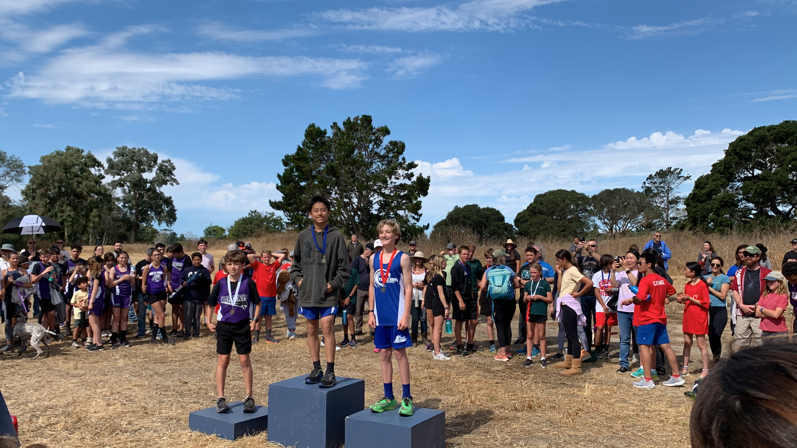
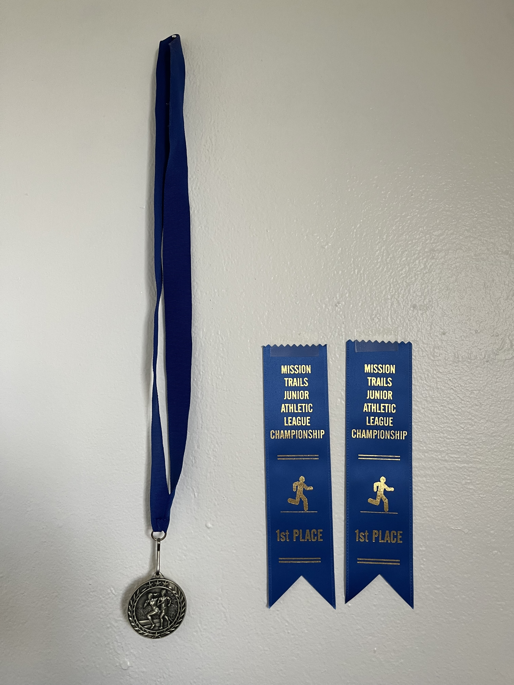

My Running Journey
Running cross country and track/field has been a journey of resilience and discovery for me. It began as a test of physical endurance, but over time, it became a lesson in mental fortitude and self-discipline. Each mile taught me something new about my limits, my perseverance, and the beauty of pushing through challenges.

I have made a lot of good friends along the way, all of them help me to push myself harder and support me.
Cross Country in 7th Grade
I started my cross country journey at 7th grade, representing my school in California's Central Coast section, competing in the Mission Trails Junior Athletic League (MTJAL). Races are 2 miles long and I would always place well in each race, but never on the podium. Each meet became a learning experience, and I found myself not only growing as a runner but also building strong bonds with teammates who shared the same grit and drive. My top time was in the championship meet at 11 minutes and 45 seconds for 2 miles. After the season ended I decided that if I wanted a medal, I had to train for it.

Summer Training
During the summer break of 7th grade, I started training everyday. Each day I would run 5 kilometers and time myself. Day by day, my time slowly got better and better, and my top time for summer training was 17 minutes and 56 seconds for my 5k.
Cross Country in 8th Grade
After a summer of dedicated training, the school year began, bringing with it the start of a brand-new cross country season. The first meet to start off Cross country was at the Palo Corona Middle School Invitational. The race was 3 kilometers of hills. I placed 2 overall and 1st for my grade, earning me a medal on the podium. Every meet after that, I would always get first place, for grade and overall. I've secured the first place medals for the championship meet and contributed to my team winning in the first 7 years.

Track/Field 7th and 8th Grade
Track/Field was a little less exciting than cross country. in 7th grade, I got a 1st place medal for the 4x100. I also got 2nd place medal for the 100m and 200m dash. In 8th Grade, since I trained, I got a first place medal for